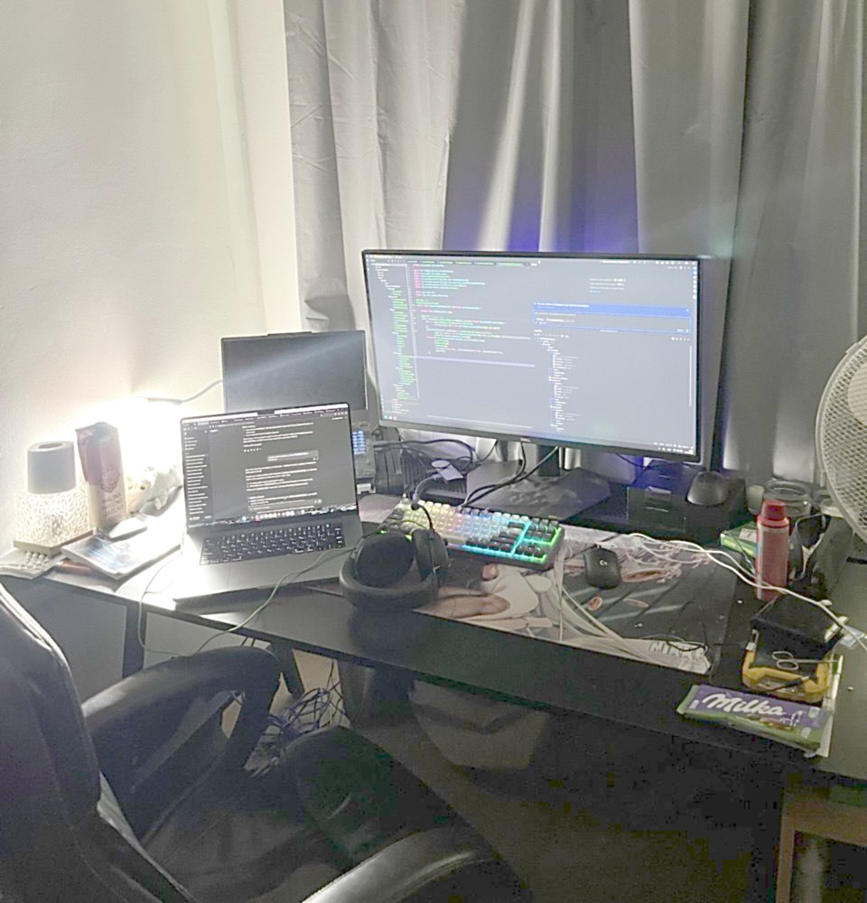

Moje pracovné prostredie
Toto je skutočná fotka kúta, v ktorom píšem backend aj školské zadania. Osem miest je aktívnych – prejdite po nich myšou alebo sa na ne preklikajte klávesou Tab a ukáže sa, načo ich používam.
Osem miest, ktoré o mne niečo povedia

Prečo práve tieto veci
Na stole nie je nič náhodné. Širokouhlý monitor s otvoreným IDE je miesto, kde vzniká backend v Jave a Kotline. Notebook vedľa neho mám kvôli cloudu a DevOps – bežia na ňom kontajnery a logy z pipeline. Klávesnica so slúchadlami znamená, že dopisujem testy, lebo funkcia bez testov nie je hotová funkcia. Závesy, ventilátor, dlhý stôl a staré kreslo sú zvyšok – veci, vďaka ktorým sa pri tom stole dá vydržať aj dlhší večer. A ten neporiadok vpravo je poctivo môj.